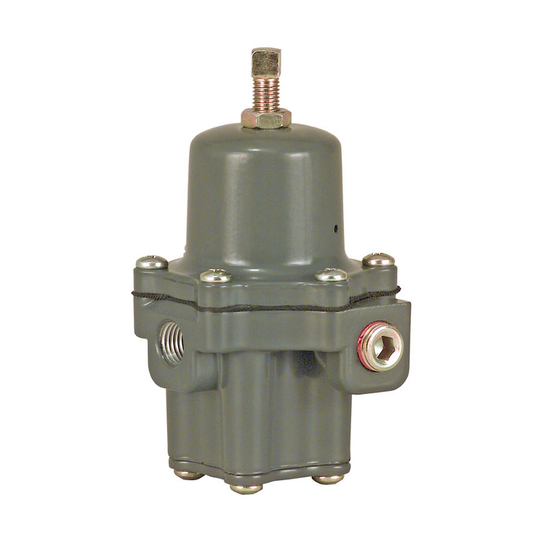
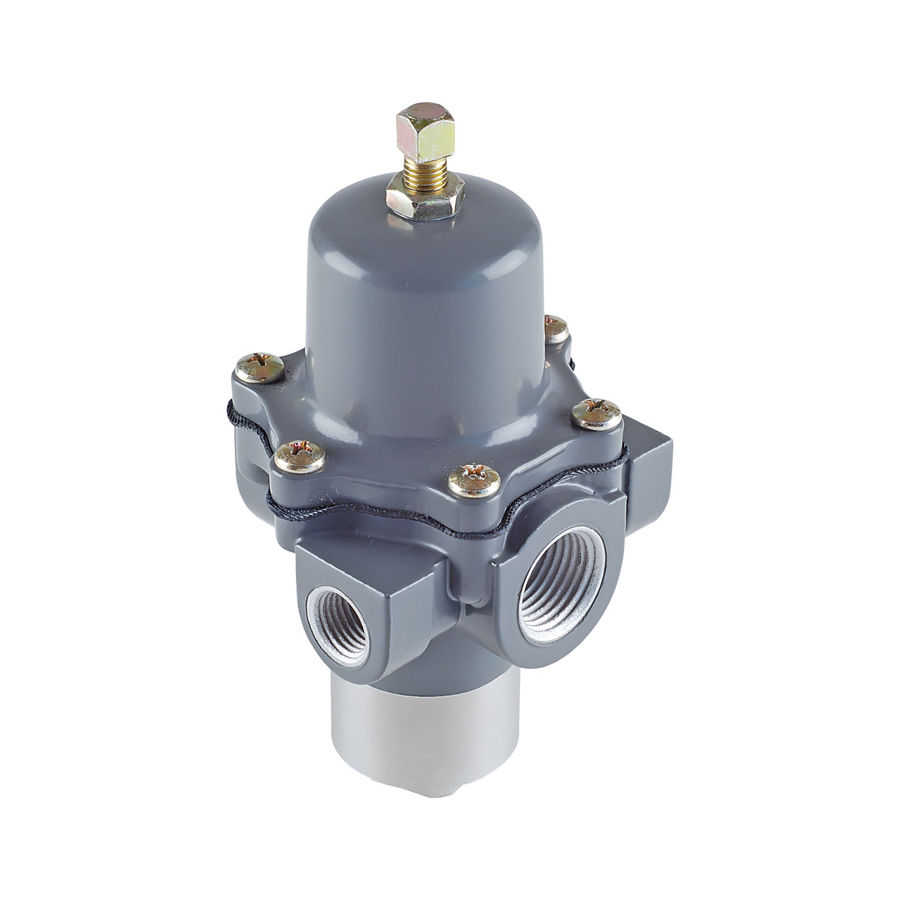
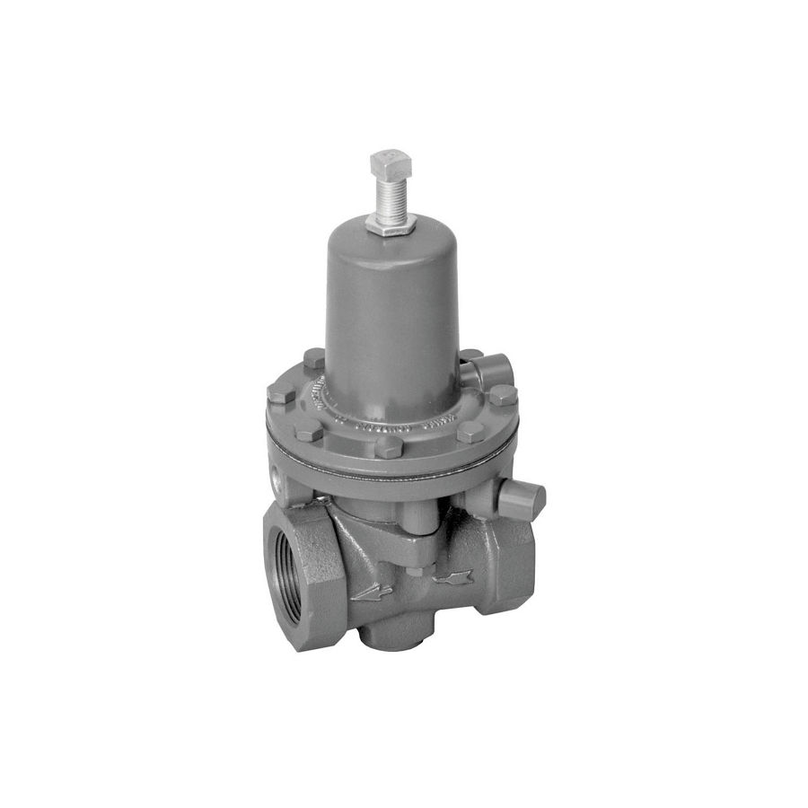
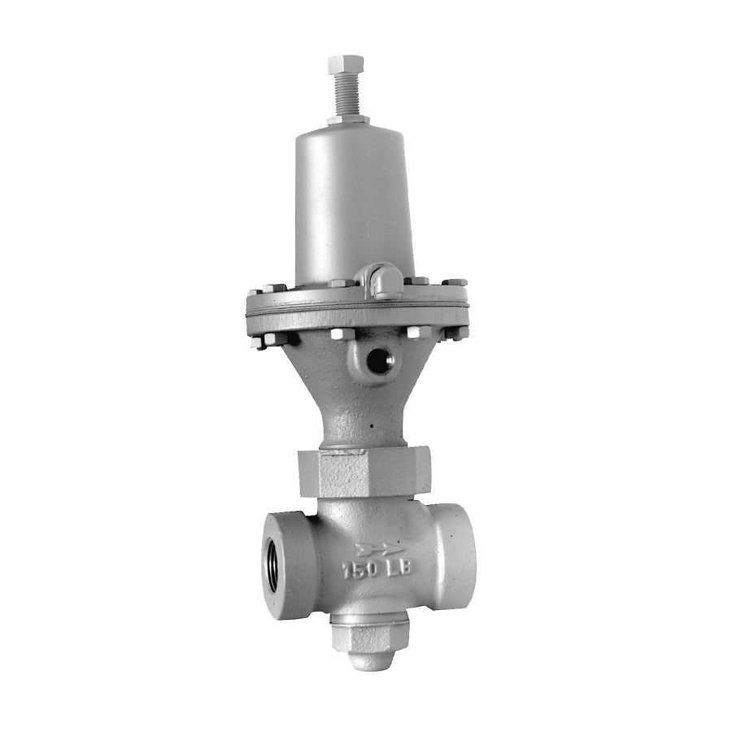
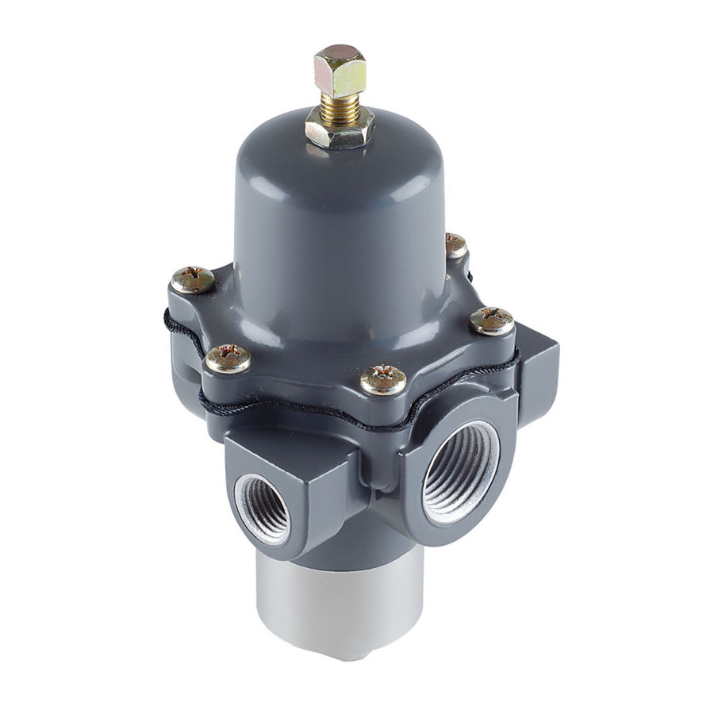
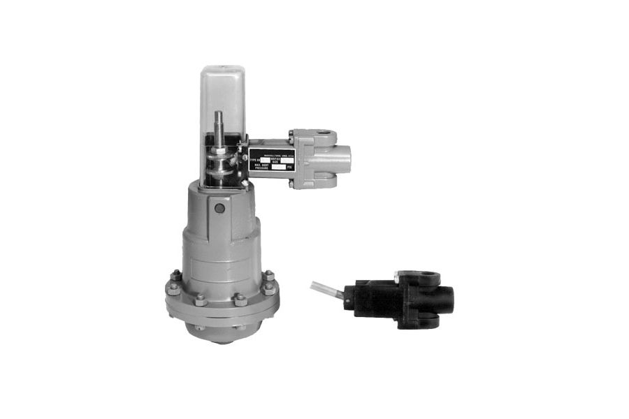
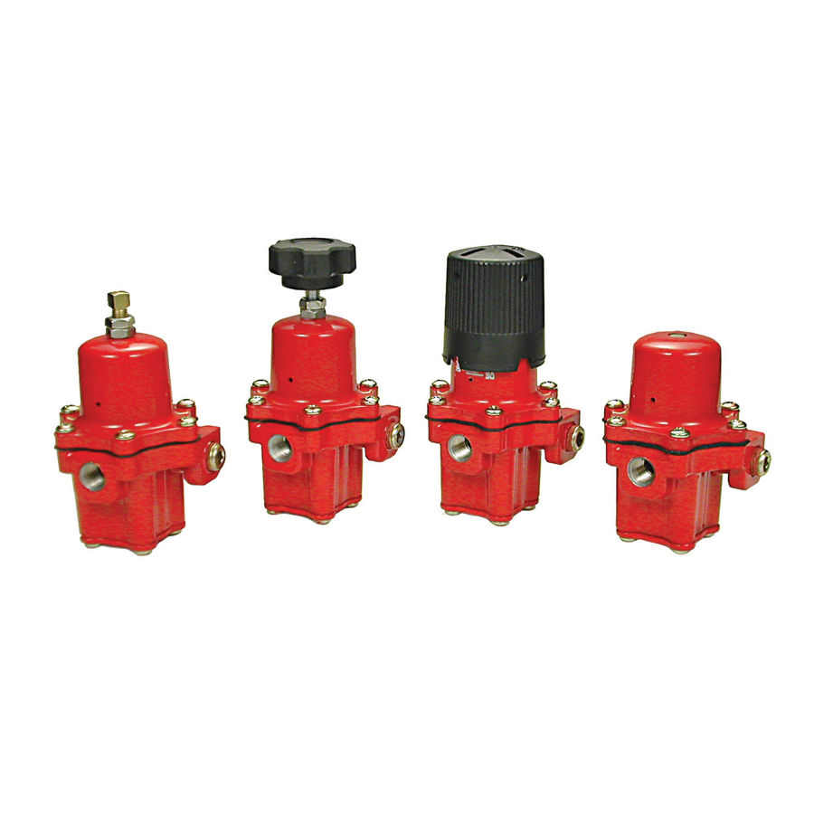

Fisher 67C Series Instrument Supply Regulators
Lọc điều áp cấp khí thiết bị phổ biến; 67CFR có lọc; bản inox 67CS; áp vào tới 17,2/27,6 bar.
Bộ lọc – điều áp khí cụ Fisher 67C/67CFR, 67D và airset/van chuyển mạch cấp khí sạch, ổn định cho positioner, actuator và thiết bị đo.
Fast Group cung cấp điều áp khí cụ & airset Fisher chính hãng, đủ CO/CQ. Mỗi model có trang riêng với mô tả, biến thể, tài liệu kỹ thuật và hướng dẫn gửi RFQ.

Lọc điều áp cấp khí thiết bị phổ biến; 67CFR có lọc; bản inox 67CS; áp vào tới 17,2/27,6 bar.

Regulator/lọc điều áp cấp khí thiết bị; áp vào tới 27,6 bar; Smart Bleed; bản inox.

Bộ điều áp khí cụ Fisher 119. Type 119 switching valve is used for on-off or throttling control of noncorrosive or mildly corrosive gases.…

Bộ điều áp khí cụ Fisher 122A. Type 122A valve is a high-capacity, economical three-way pneumatic switching valve for on-off applications.…

Bộ điều áp khí cụ Fisher 167D. 167D Series switching valves are used to deliver constant reduced pressure of gaseous fluids to…

Bộ điều áp khí cụ Fisher 168/168H/68. 168 and 168H Series pneumatically operated three-way snap-acting switching valves are used to switch…

Bộ điều áp khí cụ Fisher 67C LP-Gas. Fisher 67C is a compact high‑pressure regulator for liquid or vapor service. Models include 67CW, 67CH,…
Trụ sở TP. Hồ Chí Minh và văn phòng Vũng Tàu đều tiếp nhận RFQ, tư vấn cấu hình và bàn giao bộ chứng từ CO/CQ; bảo hành chính hãng 12 tháng kể từ ngày giao hàng. Yêu cầu gửi trong giờ làm việc được phản hồi trong cùng ngày; giao hàng toàn quốc.
150/41 Nguyễn Cư Trinh, P. Cầu Ông Lãnh
51 Lê Văn Lộc, P. Vũng Tàu